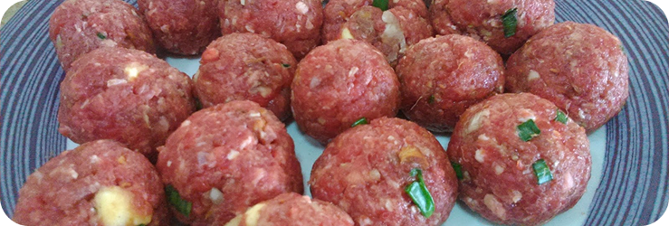

Início
Início

Nunca é tarde para aprender como fazer almôndegas! Esse bolinho de carne moída é delicioso e cai bem com vários acompanhamentos. Ele pode ser comido junto com macarrão e um belíssimo molho de tomate, por exemplo, Para pessoas em dietas com alta quantidade de proteína, as almôndegas de patinho pode sem ser ótimas opções. Se você quer algo mais rápido para comer em uma rotina corrida, que tal usá-las de recheio para um sanduíche de almondegas com queijo? As bolinhas de carne são muito versáteis! Você ainda pode temperar, modelar e congelá-las apenas para refogar antes de comer e ter uma proteína fresca no seu prato. A receita é bem simples, mas tem alguns segredos para as almôndegas ficarem deliciosas. Não basta apenas temperar a carne moída e modelar. Adicionar um ovo e um pouco de farinha de rosca ajuda a dar liga, deixando as bolinhas mais macias. Descubra agora mesmo como preparar essa receita de almôndegas imperdível!